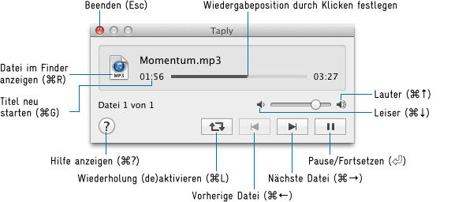

Taply ist ein einfacher Audio-Datei-Player. Obwohl viele ähnliche Tools für macOS existieren, wurde Taply so minimalistisch wie möglich gestaltet: ein kleines schwebendes Fenster, das sich nach der Wiedergabe automatisch schließt – perfekt zum schnellen Durchsuchen einer großen Anzahl von Audiodateien.
2.0.0-dev (betreut von Richard Li):
Doppelklicken Sie auf Taply, um ein Dateiauswahl-Fenster zu öffnen. Wählen Sie eine oder mehrere Audiodateien aus, um die Wiedergabe zu starten. Dateien, die nicht abgespielt werden können, werden automatisch übersprungen, und Taply beendet sich nach dem Abspielen aller Dateien.
Rechtsklicken oder Control-Klicken Sie auf einen leeren Bereich im Fenster, um das Kontextmenü aufzurufen: Direkt zu einer beliebigen Datei in der Wiedergabeliste springen, die Wiedergabeliste leeren, Einstellungen öffnen oder Taply beenden.
Ziehen Sie Audiodateien oder Ordner mit Audiodateien auf das Fenster oder das Anwendungssymbol, um sie am Ende der Wiedergabeliste hinzuzufügen.

Die Liste der unterstützten Audioformate hängt von der Systemversion ab. Auf macOS 10.14 und neuer werden mindestens die folgenden Formate unterstützt:
Carsten Blüm — bluem.net
macapps@bluem.net
Richard Li — othercat@gmail.com
Verwenden Sie diese Software auf eigene Gefahr. Sollte aus irgendeinem Grund ein Schaden oder Datenverlust durch die Nutzung entstehen (was meiner Meinung nach nahezu unmöglich ist), liegt die Verantwortung allein bei Ihnen.
Taply verwendet Kurt Revis' "PlayBufferedSoundFile" (www.snoize.com), das folgende Lizenzbedingungen hat:
Copyright © 2002-2003, Kurt Revis. All rights reserved.
Redistribution and use in source and binary forms, with or without modification, are permitted provided that the following conditions are met:
• Redistributions of source code must retain the above copyright notice, this list of conditions and the following disclaimer.
• Redistributions in binary form must reproduce the above copyright notice, this list of conditions and the following disclaimer in the documentation and/or other materials provided with the distribution.
• Neither the name of Snoize nor the names of its contributors may be used to endorse or promote products derived from this software without specific prior written permission.
THIS SOFTWARE IS PROVIDED BY THE COPYRIGHT HOLDERS AND CONTRIBUTORS "AS IS" AND ANY EXPRESS OR IMPLIED WARRANTIES, INCLUDING, BUT NOT LIMITED TO, THE IMPLIED WARRANTIES OF MERCHANTABILITY AND FITNESS FOR A PARTICULAR PURPOSE ARE DISCLAIMED. IN NO EVENT SHALL THE COPYRIGHT OWNER OR CONTRIBUTORS BE LIABLE FOR ANY DIRECT, INDIRECT, INCIDENTAL, SPECIAL, EXEMPLARY, OR CONSEQUENTIAL DAMAGES (INCLUDING, BUT NOT LIMITED TO, PROCUREMENT OF SUBSTITUTE GOODS OR SERVICES; LOSS OF USE, DATA, OR PROFITS; OR BUSINESS INTERRUPTION) HOWEVER CAUSED AND ON ANY THEORY OF LIABILITY, WHETHER IN CONTRACT, STRICT LIABILITY, OR TORT (INCLUDING NEGLIGENCE OR OTHERWISE) ARISING IN ANY WAY OUT OF THE USE OF THIS SOFTWARE, EVEN IF ADVISED OF THE POSSIBILITY OF SUCH DAMAGE.